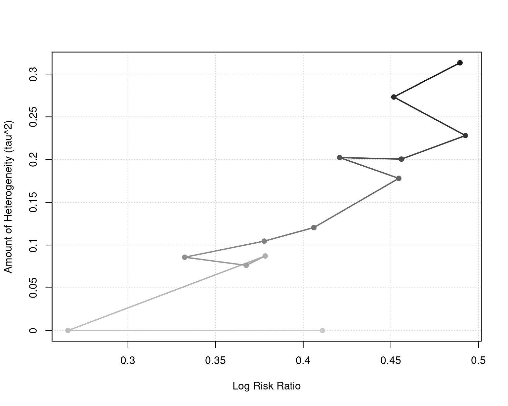
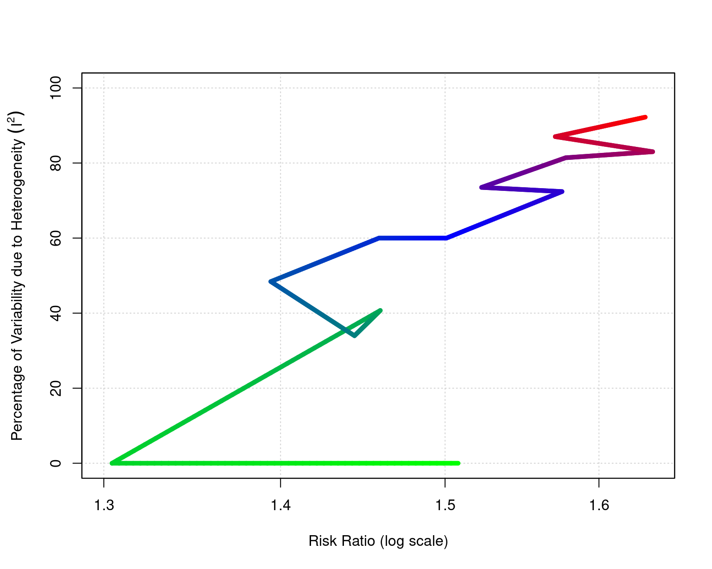

plot.cumul.rma.RdFunction to plot objects of class "cumul.rma".
# S3 method for class 'cumul.rma'
plot(x, yaxis, xlim, ylim, xlab, ylab,
at, transf, atransf, targs, digits, cols,
grid=TRUE, pch=19, cex=1, lwd=2, ...)an object of class "cumul.rma" obtained with cumul.
either "tau2", "I2", or "H2" to specify what values should be placed on the y-axis. See ‘Details’.
x-axis limits. If unspecified, the function sets the x-axis limits to some sensible values.
y-axis limits. If unspecified, the function sets the y-axis limits to some sensible values.
title for the x-axis. If unspecified, the function sets an appropriate axis title.
title for the y-axis. If unspecified, the function sets an appropriate axis title.
position of the x-axis tick marks and corresponding labels. If unspecified, the function sets the tick mark positions/labels to some sensible values.
optional argument to specify a function to transform the pooled estimates (e.g., transf=exp; see also transf). If unspecified, no transformation is used.
optional argument to specify a function to transform the x-axis labels (e.g., atransf=exp; see also transf). If unspecified, no transformation is used.
optional arguments needed by the function specified via transf or atransf.
optional integer to specify the number of decimal places to which the tick mark labels of the x- and y-axis should be rounded. Can also be a vector of two integers, the first to specify the number of decimal places for the x-axis, the second for the y-axis labels (e.g., digits=c(2,3)). If unspecified, the function tries to set the argument to some sensible values.
vector with two or more colors for visualizing the order of the cumulative results.
logical to specify whether a grid should be added to the plot. Can also be a color name.
plotting symbol to use. By default, a filled circle is used. See points for other options.
symbol expansion factor.
line width.
other arguments.
The function can be used to visualize the results from a cumulative meta-analysis as obtained with the cumul function.
The plot shows the model estimate (i.e., the estimated overall/average outcome) on the x-axis and some measure of heterogeneity on the y-axis in the cumulative order of the results in the "cumul.rma" object. By default, \(\tau^2\) is shown on the y-axis for a random-effects model and \(I^2\) otherwise, but one can also use argument yaxis to specify the measure of heterogeneity to place on the y-axis.
The color gradient of the points/lines indicates the order of the cumulative results (by default, light gray at the beginning, dark gray at the end). A different set of colors can be chosen via the cols argument. See ‘Examples’.
Viechtbauer, W. (2010). Conducting meta-analyses in R with the metafor package. Journal of Statistical Software, 36(3), 1–48. https://doi.org/10.18637/jss.v036.i03
cumul for the function to conduct a cumulative meta-analysis.
### calculate log risk ratios and corresponding sampling variances
dat <- escalc(measure="RR", ai=tpos, bi=tneg, ci=cpos, di=cneg, data=dat.bcg)
### random-effects model
res <- rma(yi, vi, data=dat)
### cumulative meta-analysis (in the order of publication year)
sav <- cumul(res, order=year)
### plot of model estimate and tau^2 over time
plot(sav)

### illustrate some other plot options
plot(sav, yaxis="I2", ylim=c(0,100), transf=exp, xlim=c(0.25,0.55),
lwd=5, cex=1.5, cols=c("green","blue","red"))
